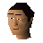

Godric

| Config name | troll_godric |
| NPC id | 1114 |
| Combat level | hidden |
| Options | Talk-to |
| Wander range | 2 tiles from spawn |
| Defined in | scripts/quests/quest_troll/configs/quest_troll.npc |
Godric
Dunstan's son.
Show all 1 spawn on the world map → Open in knowledge graph →
Locations
| Area | Coordinates | Level | Count | Map |
|---|---|---|---|---|
| Troll Stronghold (underground) | 2827, 10077 | 0 | 1 | view |
Quests
Referenced in scripts
scripts/quests/quest_troll/scripts/quest_troll.rs2scripts/quests/quest_troll/scripts/troll_godric.rs2